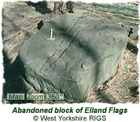
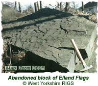

|
|
Regionally Important Geological Site
The following information was supplied by William Fraser (member of the West Yorkshire RIGS Group).
Regionally Important Geological and Geomorphological Sites (RIGS) are considered important places for Earth Science which are worthy of conservation. They are identified as being of regional value as educational, historical and aesthetic resources. Once designated, RIGS are listed on Local Authority Development Plans to try and protect the important features they show. Some sites may be managed and promoted to publicise their features to a wider audience.
Why is Gledhow Valley a RIGS site? Gledhow Valley is an area of scientific, historic and educational value. It is the site of a former stone quarry (see below) and although no solid outcrop is visible today there are a number of large blocks of sandstone (Elland Flags) which display various styles of bedding, grain sizes as well as ripple marks. Educationally, it is a good site to demonstrate bedding, lithologies, textures and structures, as well as its historical importance.
Geological History of the Area
 The rocks in the area are a fine grained, buff coloured sandstone called the Elland Flags. These belong to a series of rocks known as the Lower Coal Measure Series and are of Upper Carboniferous age - approx. 300 million years old. When they were formed britain was a very different place to what it is now. It was part of a vast continent comprising NW Europe and N America called Laurasia. This continent straddled the equator and parts of it were covered by shallow seas. Extending across Scotland and into Scandinavia and the Appalachians, was a mountain range of Himalayan proportions.Rivers flowing south from these mountains brought down huge amounts of sediment and deposited them in the shallow seas that covered N. England forming huge deltas that slowly advanced southwards filling the seas. The Coal Measures were sediments deposited on the top of this delta system and consist of thick layers mudstones and fine sandstones interspersed with seams of coal. They developed like this as the delta was repeatedly being flooded and the forests that grew on the top became buried in sediment as the delta was re-established. The Elland Flags were deposited as sand in river channels or on the land adjacent to these when they flooded. This is clear because of the ripple marks which distinguish the top surface of one of the two blocks. These were formed in moving water exactly the same as those that can be seen today on a beach when the tide goes out.
Elland Flags and the Gledhow Quarries The two photos on this page show the only clearly visible remains of the quarrying in Gledhow Valley. The one with the grooves down the middle was in the process of being hand cut (with a pick) when it was abandoned.
 The Elland Flags take their name from Elland near Huddersfield where the same beds are very well developed and have yielded (and still supply) vast amounts of stone. Locally they are known as the Harehills Stone as there was a series of quarries working them here and Gipton Wood (they appear on the 1847 & 1915 OS map). The rock provided excellent quality building stone because it was strong, could accept fine carving, was largely weatherproof, and, because of its well bedded nature, could be easily split into sheets and slabs for a variety of uses. This is due to the presence, on the bedding plane, of a flat, platy mineral called mica which also gives the rock a sparkly appearance when freshly broken bedding planes are viewed in sunlight.Where the bedding is thinnest it was used for paving - Yorkshire Flagstone. Where it was thicker it could be split into blocks and used for walling ('ashlar stone'), lintels, steps, columns, gateposts etc. The two blocks in the photos were probably abandoned due to the strongly developed ripple marks which would have interfered with the tendency to split along flat surfaces. The Harehills Stone was very important to the developing city of Leeds. It is said that it was as important to Leeds as Bath Stone was to Bath and Portland Stone (the white limestone also used in the Headrow, Leeds Civic Hall, Queens Hotel and Leeds General Infirmary) to London. Until 1856 it was almost the only stone used by local architects and was also exported. Records show it was used in the construction of the Westminster (London) Bridewell in 1830-4. The quarry where the pictured blocks are situated was known as Deans Quarry and had working faces up to 10m high. The upper beds were rather poor quality and mainly used as foundation stone. Beneath these was the flagstone, approx 1 m thick in total. The best stone lay about 5m below ground level and from it blocks up to 1m thick could be quarried. The quarries suffered problems with flooding at their lowest levels. The West Yorkshire Geology Trust (formerly known as the West Yorkshire RIGS Group) produced an updated factsheet about the Gledhow Valley site in 2010. This can be dwonloaded below:
|
|
 |